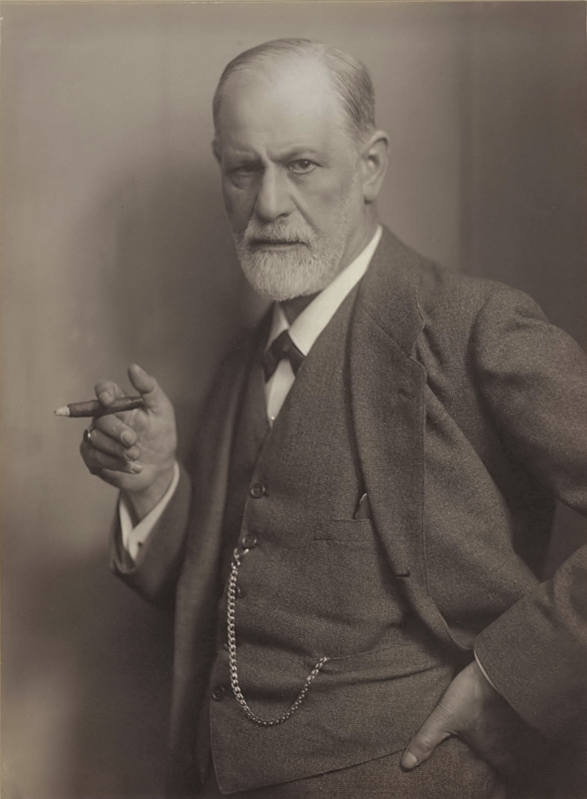

Sigmund Freud
Sigmund Freud is the founder of psychoanalysis and one of the most influential psychologists of all time.
Possibly Freud's most important concept was that of the Id, ego, superego.
Following is as described from Simple Psychology
- "The id is the impulsive (and unconscious) part of our psyche which responds directly and immediately to the instincts. The personality of the newborn child is all id... The id engages in primary process thinking, which is primitive, illogical, irrational, and fantasy oriented. This form of process thinking has no comprehension of objective reality, and is selfish and wishful in nature. The ego develops to mediate between the unrealistic id and the external real world. It is the decision-making component of personality. Ideally, the ego works by reason, whereas the id is chaotic and unreasonable."
- "The ego operates according to the reality principle, working out realistic ways of satisfying the id’s demands, often compromising or postponing satisfaction to avoid negative consequences of society.
The ego considers social realities and norms, etiquette and rules in deciding how to behave. Like the id, the ego seeks pleasure (i.e., tension reduction) and avoids pain, but unlike the id, the ego is concerned with devising a realistic strategy to obtain pleasure. The ego has no concept of right or wrong; something is good simply if it achieves its end of satisfying without causing harm to itself or the id." - "The superego's function is to control the id's impulses, especially those which society forbids, such as sex and aggression. It also has the function of persuading the ego to turn to moralistic goals rather than simply realistic ones and to strive for perfection. The superego consists of two systems: The conscience and the ideal self. The conscience can punish the ego through causing feelings of guilt. For example, if the ego gives in to the id's demands, the superego may make the person feel bad through guilt. The ideal self (or ego-ideal) is an imaginary picture of how you ought to be, and represents career aspirations, how to treat other people, and how to behave as a member of society."
You can find his books Here